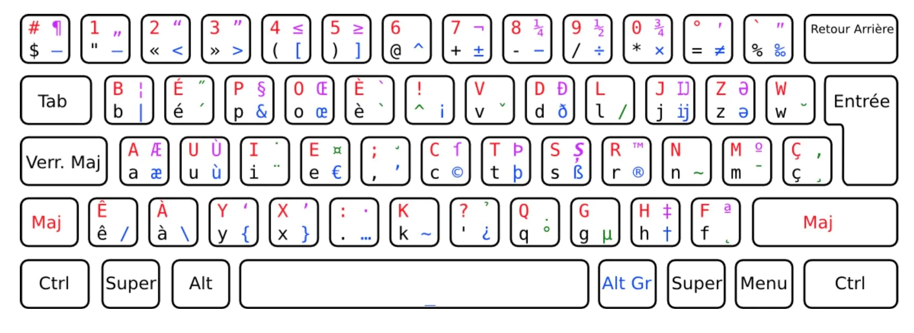

Vim
Mais pourquoi s'infliger ça ?
Préparé avec
par
Vincent Jousse
@vjousse@mamot.fr
Once upon a time
Analyste programmeur, CTO, prof, dirigeant,…
Développeur Python, Rust & Elm
En mission chez
Béta Gouv
Et bien sûr…
Libriste et Vimiste convaincu :-)
Vim : Kesako ?
Vim : Pourquoi ?
Parce que ça fait 50 ans que le concept existe
un argument fallacieux s'est glissé dans ce slide, saurez-vous le retrouver ?Chaîne Hygiène Mentale
Windows, Mac, Linux, BSD,…
Mon expérience
Troubles Musculo-Squelettiques
Bépo

Vim : et concrêtement ?

Vim : les bonnes raisons de ne pas s'y mettre
Le futur de Vim : NeoVim
Ma configuration
https://github.com/vjousse/dotfilesUn livre à prix libre
https://vimebook.comDes questions ?
Fait à la main !
- Reveal.js http://lab.hakim.se/reveal-js/
- Font-awesome http://fontawesome.io
- Firefox
- NeoVim
- ArchLinux